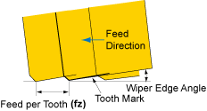
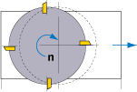

\[ vc = \frac{\pi \cdot D \cdot n}{1000} \, (m/min) \]
vc : Cutting Speed (m/min)
D : Cutter Diameter (mm)
n : Spindle Speed (min-1)
D : Cutter Diameter (mm)
n : Spindle Speed (min-1)
\[ fz = \frac{vf}{z \cdot n} \, (mm/tooth) \]
fz : Feed per Tooth (mm/tooth)
vf : Table Feed (mm/min)
z : Number of Teeth
n : Spindle Speed (min-1)
vf : Table Feed (mm/min)
z : Number of Teeth
n : Spindle Speed (min-1)
Cutting Speed (vc) Parameters
min-1
mm
m/min
Feed per Tooth (fz) Parameters
mm/min
teeth
mm/tooth
* π (Pi) = 3.14
* This calculator is for reference only. Actual results may vary based on cutting conditions.
* This calculator is for reference only. Actual results may vary based on cutting conditions.